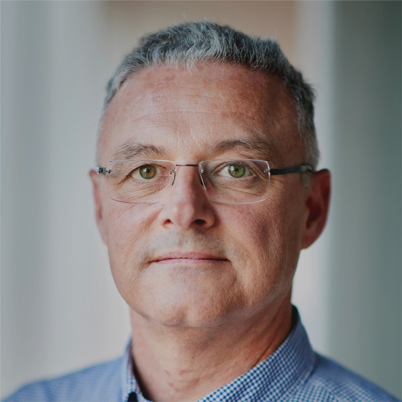

Program & portfolio leadership
Large-scale IT program and portfolio management, from roadmap and prioritisation to delivery — across infrastructure, cloud, and digital transformation.
Freelance senior IT program & portfolio manager
Senior program leadership for the IT work that cannot afford noise.
Calm delivery, real outcomes.

About
Freelance senior IT program and portfolio manager. I step into complex, high-stakes delivery when it matters most, and I stay until the outcome is real.
Over 20+ years I have delivered complex IT initiatives across logistics, government, pharma, telecom, and banking — leading multi-million-euro programs, coordinating cross-functional and vendor teams, and putting governance and portfolio frameworks around delivery so it stays predictable.
I am most effective where clarity, structure, and stakeholder trust are the deciding factors — working with executive sponsors, CIOs, architects, and external partners. Hands-on and people-centric, I balance governance with agility and strategy with execution in regulated, mission-critical environments.
What I do
Six things I am brought in for — most often on programs where a wrong turn is measured in millions and months.
Large-scale IT program and portfolio management, from roadmap and prioritisation to delivery — across infrastructure, cloud, and digital transformation.
Building and running PMOs on Prince2 and Agile: governance, delivery standards, reporting structures, and the portfolio visibility that improves decisions.
Mission-critical, regulated environments where downtime is not an option — services for 300+ offices, rollouts across 37 sites in 13 countries.
Aligning executive sponsors, CIOs, architects, and external partners; managing ERP and infrastructure vendors from contract through to delivery.
Network, security, data-centre, and cloud modernisation (Azure, AWS, SaaS, IaaS), plus ERP and finance-system implementations.
IGA/IAM/PAM program management on Omada Identity, with working exposure to NIS2 and ISO 27001.
Skills & expertise
Three groups I work across — management, technology, and method — plus what I am actively into right now.
Selected experience
A selection from a 20+ year track record spanning logistics, government, pharma, telecom, banking, and IT services.
Cronos Security
Gosselin Group
CM – Christelijke Mutualiteit
Umicore
PwC Belgium
Coreso SA
Johnson & Johnson
Project & program management
Education & certifications
Formal degrees on one side, a decade of deliberate self-study and professional certification on the other.
Contact
I work with consulting clients, program owners, and hiring partners across Belgium and the EU. Tell me what the program needs to achieve — I’ll tell you honestly whether I am the right fit.
Based in Vosselaar, Belgium · open to freelance engagements.